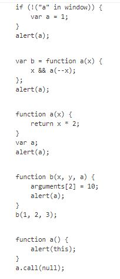

1. Для практикума из занятия 7 продумать, где можно применить замыкания.
2. Не выполняя кода, ответить, что выведет браузер и почему:
 1 код:
if (!("a" in window)) {
var a = 1;
}br
alert(a);
Выдаст undefined, так как код читается: если не "а" в window, создай "a"= 1 и выведи сообщение.
Undefined, переменная 'a'не получит значение).
2 код:
var b = function a(x) {
x && a(--x);
};
alert(a);
Выдаст ошибку "a" не определена.
3 код:
function a(x) {
return x * 2;
}
var a;
alert(a);
Выдаст тело самой функции, если сделать так alert(a(3)); выдаст 6
код:
function b(x, y, a) {
arguments[2] = 10;
alert(a);
}
b(1, 2, 3);
Выдаст 10, второму по счету начиная с 0 присвоили значение 10 a=10
5 код:
function a() {
alert(this);
}
a.call(null);
Выдаст объект windows, так как this это вызов объекта window